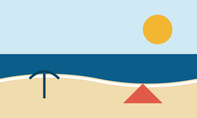

Haeundae Beach
Busan's most famous beach, easy to reach by subway. Busy in summer, calm in autumn.
Practical help for international students: visas, part-time jobs, housing, and what is happening around the city.
Read the guides See eventsBusan is South Korea's second-largest city, with beaches, mountains, and many universities. Students come from all over the world and often ask the same questions in their first months. This site collects those answers in one place, written by students who have been through it.
Police: 112
Fire and ambulance: 119
Korea Immigration Contact Center: 1345
Multiple languages available.
Korea Travel Hotline: 1330
Interpreter help in several languages.

Busan's most famous beach, easy to reach by subway. Busy in summer, calm in autumn.
A hillside neighbourhood of colourful houses, small galleries, and street art.
A popular evening spot with cafes and a view of the lit-up bridge.